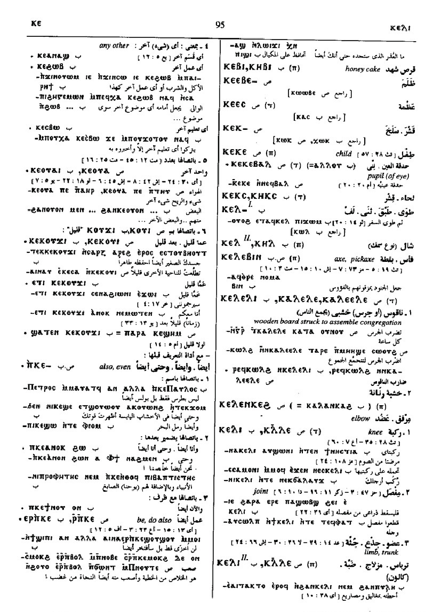

(noun male/female)
another [αλλοσ, ετεροσ]
― substant (always ϭⲉ)
―― with demonst, this other
― ⲕⲉ- adj
―― other, different
―― with ⲥⲟⲡ
―― ⲕⲉ . ⲕⲉ B, any other
―― ⲕⲟⲩ- S = ⲕⲉ- (mostly Sa, Theban), oftenest with number oe measure
―― with number
―― with def art, the other [δευτεροσ]
―― with adj, esp ⲕⲉⲕⲟⲩⲓ, ⲕⲟⲩϫⲓ
―― adverbial
― pl
―― ϩⲉⲛⲕⲟⲟⲩⲉ S = ϩⲁⲛⲕⲉⲭⲱⲟⲩⲛⲓ B
―― ⲕⲉⲕⲟⲟⲩⲉ
― ⲕⲉ- with def art
―― may = also, even
―― advb
―― with pron & sg m art B
―― ⲣ ⲡⲕⲉ- , be, do also
― substant (always ϭⲉ)
―― with demonst, this other
― ⲕⲉ- adj
―― other, different
―― with ⲥⲟⲡ
―― ⲕⲉ . ⲕⲉ B, any other
―― ⲕⲟⲩ- S = ⲕⲉ- (mostly Sa, Theban), oftenest with number oe measure
―― with number
―― with def art, the other [δευτεροσ]
―― with adj, esp ⲕⲉⲕⲟⲩⲓ, ⲕⲟⲩϫⲓ
―― adverbial
― pl
―― ϩⲉⲛⲕⲟⲟⲩⲉ S = ϩⲁⲛⲕⲉⲭⲱⲟⲩⲛⲓ B
―― ⲕⲉⲕⲟⲟⲩⲉ
― ⲕⲉ- with def art
―― may = also, even
―― advb
―― with pron & sg m art B
―― ⲣ ⲡⲕⲉ- , be, do also
(S, A, sA, B, F, O)
ⲕⲉ
(S) ϭⲉ
(F) ⲕⲏ, ϭⲏ
(sA) ⲕⲁⲓ-
(S) ⲕⲟⲩ-
(S) ϭⲉ
(F) ⲕⲏ, ϭⲏ
(sA) ⲕⲁⲓ-
(S) ⲕⲟⲩ-
| (S, B, F)
ⲕⲉ-
(adj.)
(S) ⲕⲁⲓ- (adj.) |
(adjective)
other, different with ⲥⲟⲡ ⲕⲉ ⲕⲉ B, any other with number with def art, the other with adj, esp ⲕⲉⲕⲟⲩⲓ, ⲕⲟⲩϫⲓ428 |
Crum: 90b | |||||||
| (S)
ϩⲉⲛⲕⲟⲟⲩⲉ,
ⲕⲉⲕⲟⲩⲉ
(ⲛ)
(NH) ϩⲛⲕⲟⲟⲩⲉⲓ (ⲛ) (NH) ϩⲛⲕⲟⲟⲩⲉ (ⲛ) (S, NH) ϩⲛⲕⲉⲕⲟⲟⲩⲉ (ⲛ) |
(noun)
429 |
Crum: 91b | |||||||
| (S, B, F) ⲕⲉ- | with def art a may =
also, even
― no Gk advb with pron & sg m art ― ⲣ ⲡⲕⲉ- , be, do also430 |
||||||||
| ⲣ ⲡⲕⲉ.- | be, do also8864 | ||||||||
| (S)
ⲕⲉⲧ
(ⲡ/ⲧ)
(B) ⲭⲉⲧ (ⲡ/ⲧ) (F) ⲕⲏⲧ (ⲡ/ⲧ) (S) ⲕⲉⲧⲉ, ⲕⲏⲧⲉ (ⲧ) (B) ⲭⲉϯ (ⲡ/ⲧ) |
(noun male/female)
another ― without art [αλλοσ] ― with art or demonst, the, this other [και ουτοσ, ο ετεροσ, ο αλλοσ] adv, again431 |
Crum: 92a | |||||||
Crum: 90,91,92

90

91

92
Dawoud: 94b-95a

94

95